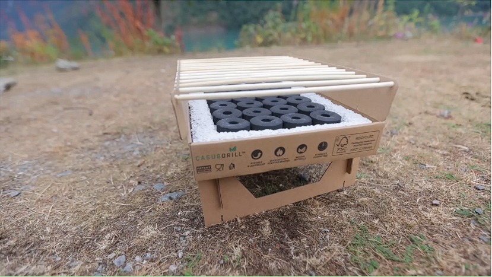
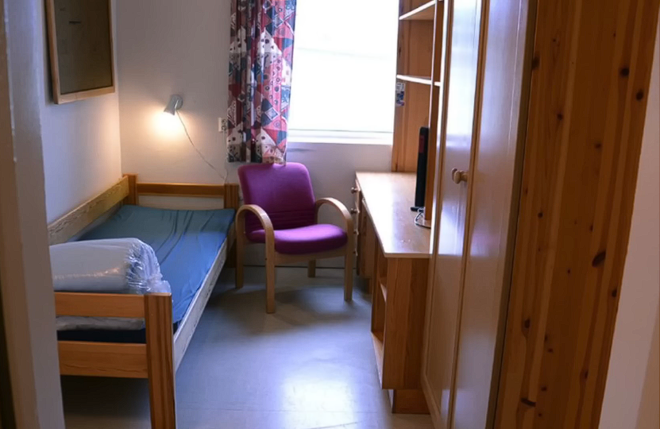
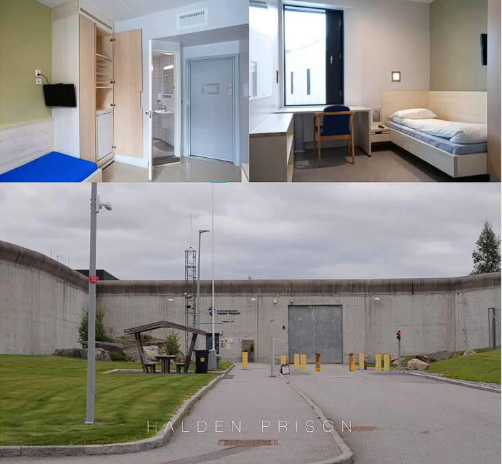

Норвегія відома своєю турботою про навколишнє середовище, і саме тому в країні зараз будують завод, який буде поглинати CO2 з атмосфери та перетворювати його в рідину. Ця рідина буде закачуватися назад у підземні резервуари, звідки раніше видобували нафту.Ці потужні машини не тільки видобувають природні ресурси, а й у майбутньому будуть використовуватися для боротьби з глобальним потеплінням, ставлячи Норвегію на передову лінію у вирішенні екологічних проблем.
Це екологічно чистий гриль, виготовлений з матеріалів, що повністю піддаються переробці.Його збирають, як конструктор Lego, і після цього він стає повноцінним грилем для барбекю.Цікаво, що цей гриль працює без використання традиційного пального, підтримуючи ідеї стійкості та екологічної відповідальності.
Давайте заглибимося в систему в'язниць Норвегії, яка стала широко відомою після арешту Андерса Брейвіка.Громадськість була обурена умовами, в яких він перебував, дізнавшись, що його тримають у просторій 3-кімнатній кімнаті, яка явно не відповідає стандартам типових в'язниць.Насправді, це місце було набагато комфортніше, ніж очікувалося. Брейвік навіть скаржився на «нелюдські умови» через відсутність PlayStation 3, замість того, щоб отримати нову консоль.
Це місце вважається одним з найкращих у світі завдяки своєму архітектурному дизайну.Затримані мають свої окремі кімнати, оснащені душем, туалетом, телевізором та навіть маленьким холодильником. Більше того, вікна не захищені решітками, що є однією з основних ознак сучасного підходу до утримання.
